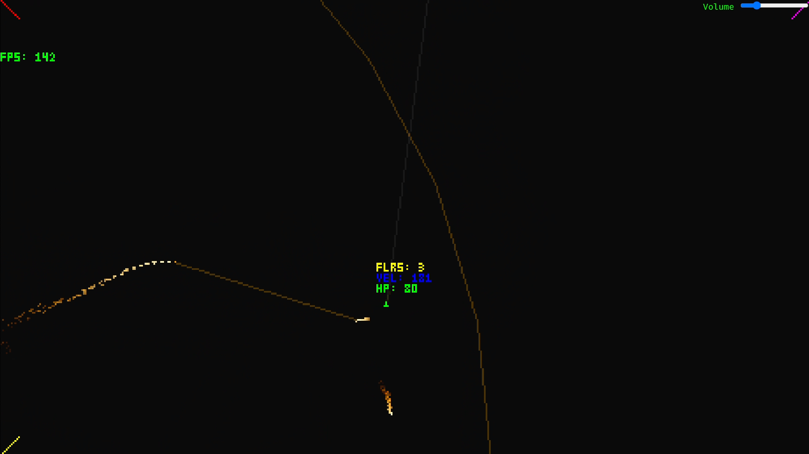
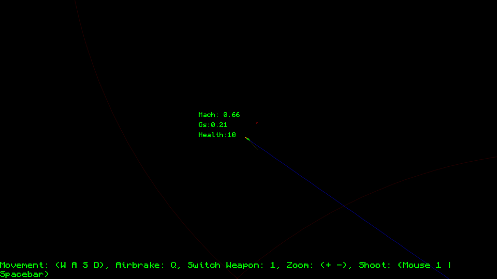
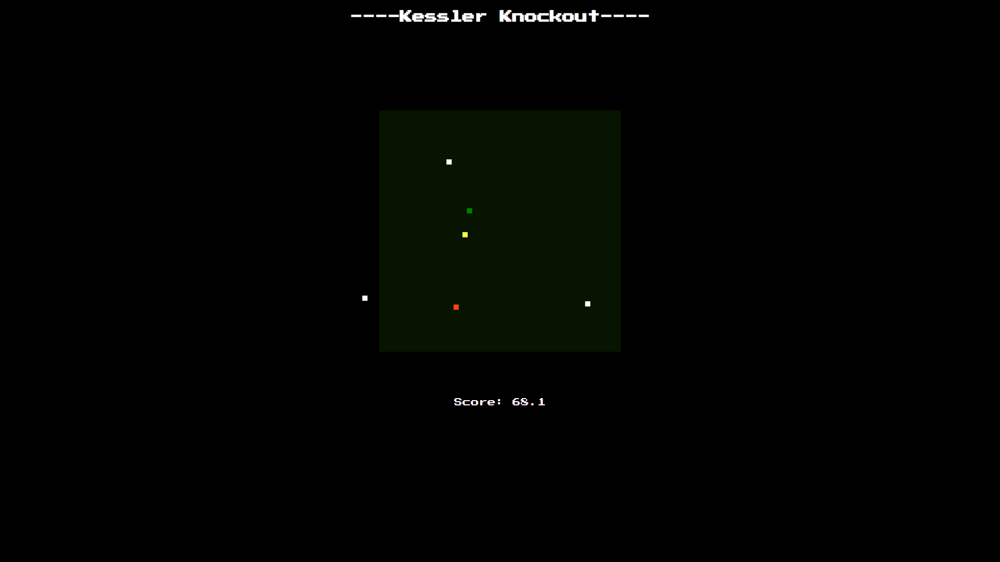
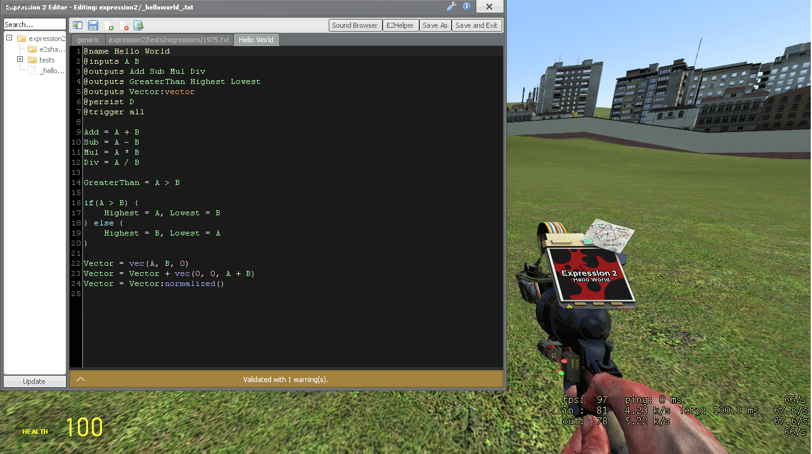
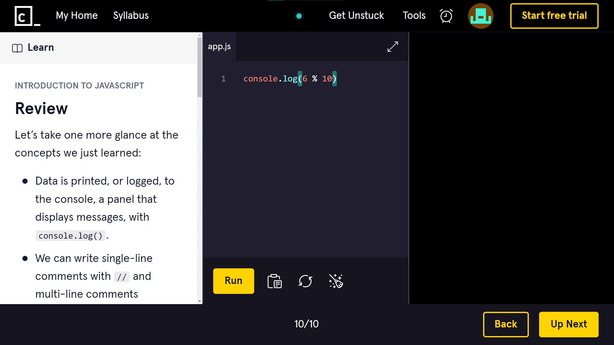
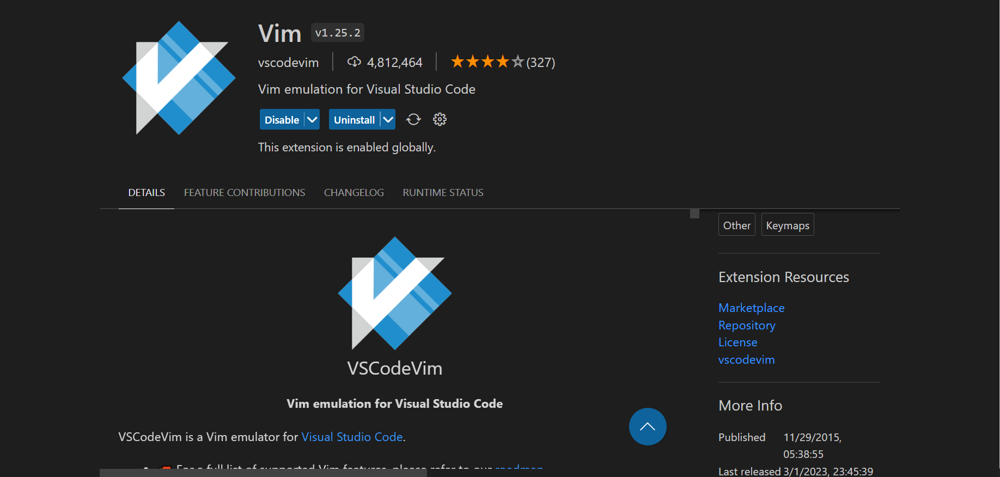
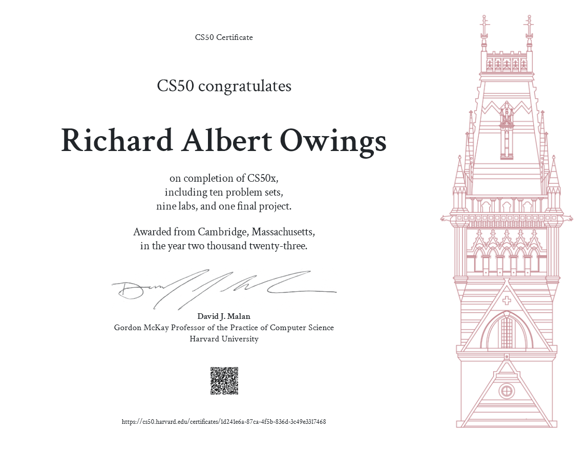
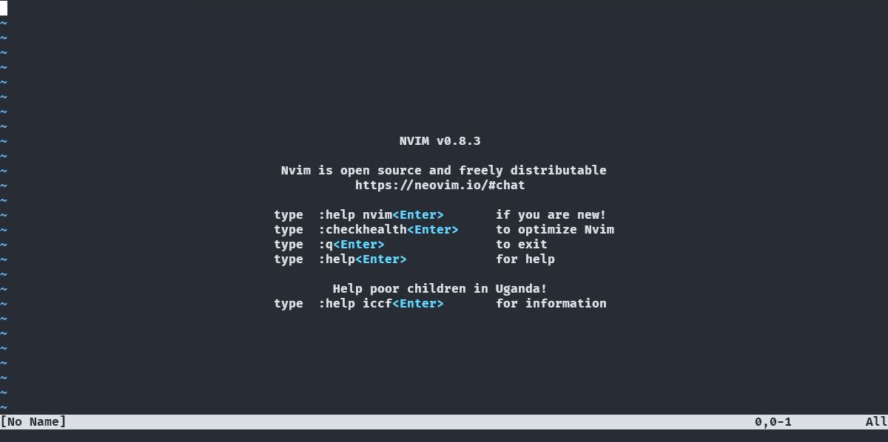
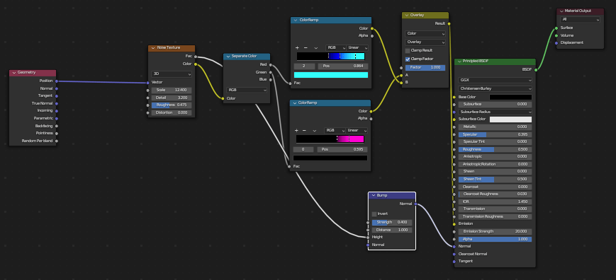
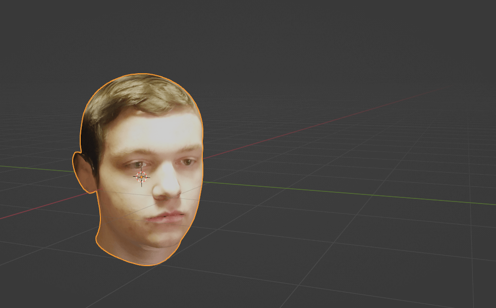

Projects
Conveyor

Tiled conveyor belt game. Made using Javascript, HTML, CSS, and Bootstrap. Does not use canvas element!
Dogfight
Game built off the original idea of Missile Dodge. There were several things about Missile Dodge that I wanted to improve on, so I rewrote the whole code base in typescript. A lot of the drawing functions had to be custom made in order to achieve the pixelated look, for example, the draw line functions.
Missile Dodge
Dodge enemy missiles from incoming ground installations. The missiles will aim where you are going to be, not where you are (leading)! Made with HTML, CSS, and Javascript
Fighting Game
Local multiplayer game based off the likes of street fighter. Made with HTML, CSS, and Javascript
Terminal Typing
Terminal application I made using NODEJS. It is a typing application that randomly generates text so you can do a typing test. You can import custom txt files to test with in the "./data/words" folder. You can add as many txt files as you want, and it will dynamically increase your choices when you run the app.
Kessler Knockout
Gravitationally based bullet hell game. One of my older projects. Made with HTML, CSS, and mostly Javascript
Simple Box Platformer

Platformer game that I made using HTML, CSS, and Typescript. Simple graphics, inspired by Worlds Hardest Game. If you are not goot at platformers, then you probably would not like it because it is difficult
I made the project using a different workflow. I had a "developement folder" that has snowpack. Snowpack would then pack that into a "build" folder within the dev folder. I then, ouside that folder, have a "sh" linux script that moves the files to a static folder so that I can push to a git repository.
About Me
- Calm and nice demeanor
- Love to learn new things
- Self taught programmer (HTML, CSS, JAVASCRIPT, C, PYTHON, SQL)
- Music
- 3D Modeling
- Gaming
click to expand topics
Programming
How I got into Programming
When I was in school, I would play a game called Garry's Mod. There was a modification to the game called Wiremod which would allow you to essentially program within the game. This was the first thing that really got me into it. They did try to introduce the idea in school with Scratch, but it did not really get me too interested because of how tedious it was to use.
First Online Course
I took an online course called Codecademy, which taught me the grammer of the Javascript language. Although it was not really that good for actually learning how to employ the language on its own, it was a good steping stone for getting into the programming mindset. The rest of my initial knowledge at the time came through watching tutorials on Youtube and finding things on Stack Overflow.
First Project
The first project that I made that I was pretty proud of was Kessler Knockout. I was halfway through the Codecademy course when I made it, so I had to just hack it together with some of the concepts that I understood at the time. While I definetely cringe at the code looking back at it now, it was something that really got me into programming as a whole.
More Projects
After that, I would make projects for the fun of it. I would learn a lot through just trying to make something that I would find cool and interesting. Because I am an avid gamer, a lot of those things were games!
Increasing My Efficieny...
When I was programming things, I was getting kind of annoyed. It felt very inconvenient to take my hand and slightly move it to the bottom right hand corner of my keyboard. I then randomly found an extension on VSCode called VIM. It took time to get used to the keybinds for it, but it was definetely worth it! I will always look for a way to use the VIM keybinds in any sofware I use for now on. At the time, I did not know that it was a full blown text editor. I have not moved over to it entirely just yet, but I have dabbled quite a bit with it already.
My First Certification
I wanted to learn more about programming while getting some credentials in the process. I decided to take the Harvard CS50x course in order to achieve that goal. It was a really fun course and I learned a lot through doing it.
Using NVIM
While I was taking the course, I thought it would be fun to use NVIM to take my notes, so I did. In doing so, I learned a bit about configuring my VIMRC. One thing that I had configured was for making it so that if a line goes off of the screen, insead of wrapping half way through the word, it would do word wrapping and also preserve the indentation. I am still a novice at using NVIM, but I will hopefully get better as time goes on and I might be able to use it as my main IDE at some point.
Coding in C
In the first five weeks of the course, they used the C language. Because we were programming in C, they covered managing your ram usage for an application via using malloc, free, and realloc a bit. They also introduced pointers, which was a completely foriegn concept coming from Javascript. One thing that I found interesting was how similar the syntax was for Javascript when comparing it to C.
Everything Else
After C, they got into Python, SQL, and Web Code (HTML, CSS, JAVASCRIPT, and FLASK). Since I had quite a bit of experience programing at this point, it was pretty easy to convert my knowledge to a different language such as Python. SQL was completely different, as it's use case is for databases. I would say that it is the language that I have the least experience with, but I do understand it based off of what we did with it in the course. The Web Code portion was basically review for what I already knew. The only main curveball was FLASK, which was pretty fun once I figured it out.
Final Project
The final project for the course that I made was Conveyor. I had the idea for it while I was making the course, so I decided to make it as my final project. It is not entirely original, as it is inspired by the likes of Factorio and Minecraft, but I solved a lot of problems while I was making it. It is probably the most complicated thing that I have made to date, with around 1,200 lines of code! While I was making it, I did not want to get stuck up on just trying to figure out how to layout the game, so the code is a little bit messy. The end product, however, I am really happy with. One thing that I did differently with this game was the way that it was made. Most of my games up to this point were made using a canvas element. This one actually just uses different HTML elements for the things in game. One upside to doing it this way is that it enables you to use CSS animations for some of the things in the game.
3D Modeling
Introduction
On my free time, I got into this 3d Modeling software called Blender. With it, you can create basically anything you can imagine. I got sucked into these tutorials on Youtube talking about what you can do with the software. I highly recommend getting into it. Since it is free, the barrier for entry is just to download it.
Node System
One thing that I really like about Blender is the node system. With it, you can basically connect these different blocks together that have different logic in order to achieve, for example, a texture for an object. The nodes are basically just a graphical programming language in a sense. It is really fun to use once you can wrap your head around it.
Addons
There are different addons that you can get for Blender. A while back, I got an addon for Blender called FaceBuilder. With it, you can take a bunch of picture revolving around your face, and morph this template face to fit your face. This is just one of the thousands of addons that people have made for Blender. You can find a lot of them on the Blender Market